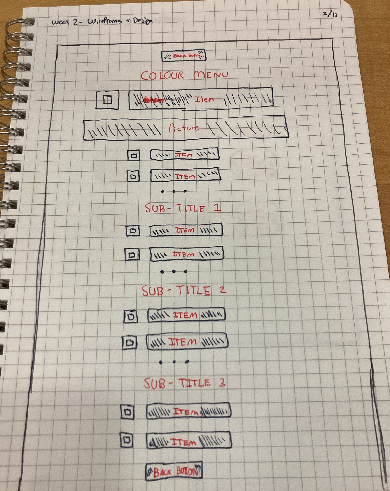
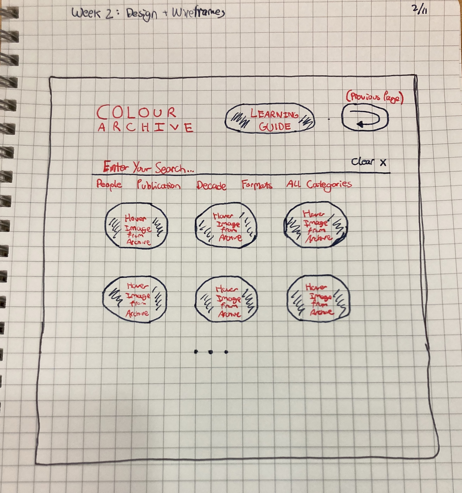

Visual Telling of Stories webpage: Colour's

Redesign of initial webpage with consideration of visual hierarchy

What is the goal of the website? Who is it intended for? How does the design accomplish this? Write 2-3 sentences answering these questions.
Dr. Chris Mullen studies Visual Culture in the U.K., and part of his educational service duty is to disseminate academic research to the public. Part of the initiative is this website, which is an informal archive of significant materials chronicling the form of visual narrative. It serves as an initial starting marginalian hub for passionate individuals and researchers alike studying the trajectory of visual narratives in relation to larger structural trends in society. Mullen's web design is reflective of his scholarly pursuit - and those using the site - in visual narratives. After selecting a subject tab, the user is then able to explore archival files visually, and then reference basic bibliographic information below the image collage.
Write 2-3 sentences about what problems your redesign addressed, and how it solved them.
Mullen's initial website design expresses the chaotic nature of exploring visual narratives, an extension of his own thinking most likely. However, though the web design itself should be archived as a moment in time, a lot of the randomness doesn't create a flow to the research process. While addressing visual hierarchy, I also considered the problem of information processing itself being a design issue. Since Mullen's archive is for visual material, a lot of which has no relation to the other in terms of topic, I thought the best approach would be for a search bar that speaks to a catalogued database of the archived material, with some general categorical suggestions at the top. Honoring his attention to visual narratives, I think it speaks to another kind of reseracher to also have the image collection sitting below the search bar in cascading rows. Mullen's initial categorical tab web design is actually a textbook use of white space the draw a user's attention to the pertinent information. So trying to correct something which already functioned well provoked me to ask different questions on the user experience aside from only visual hierarchy of text and image.